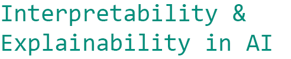

<!DOCTYPE html>


<html lang="en" data-content_root="../" >

  <head>
    <meta charset="utf-8" />
    <meta name="viewport" content="width=device-width, initial-scale=1.0" /><meta name="generator" content="Docutils 0.18.1: http://docutils.sourceforge.net/" />

    <title>Week 3 Lab 1: DeepLTL data analysis (I) &#8212; Interpretability &amp; Explainability in AI — Workshop materials</title>
  
  
  
  <script data-cfasync="false">
    document.documentElement.dataset.mode = localStorage.getItem("mode") || "";
    document.documentElement.dataset.theme = localStorage.getItem("theme") || "light";
  </script>
  
  <!-- Loaded before other Sphinx assets -->
  <link href="../_static/styles/theme.css?digest=8d27b9dea8ad943066ae" rel="stylesheet" />
<link href="../_static/styles/bootstrap.css?digest=8d27b9dea8ad943066ae" rel="stylesheet" />
<link href="../_static/styles/pydata-sphinx-theme.css?digest=8d27b9dea8ad943066ae" rel="stylesheet" />

  
  <link href="../_static/vendor/fontawesome/6.5.1/css/all.min.css?digest=8d27b9dea8ad943066ae" rel="stylesheet" />
  <link rel="preload" as="font" type="font/woff2" crossorigin href="../_static/vendor/fontawesome/6.5.1/webfonts/fa-solid-900.woff2" />
<link rel="preload" as="font" type="font/woff2" crossorigin href="../_static/vendor/fontawesome/6.5.1/webfonts/fa-brands-400.woff2" />
<link rel="preload" as="font" type="font/woff2" crossorigin href="../_static/vendor/fontawesome/6.5.1/webfonts/fa-regular-400.woff2" />

    <link rel="stylesheet" type="text/css" href="../_static/pygments.css?v=fa44fd50" />
    <link rel="stylesheet" type="text/css" href="../_static/styles/sphinx-book-theme.css?v=384b581d" />
    <link rel="stylesheet" type="text/css" href="../_static/togglebutton.css?v=13237357" />
    <link rel="stylesheet" type="text/css" href="../_static/copybutton.css?v=76b2166b" />
    <link rel="stylesheet" type="text/css" href="../_static/mystnb.4510f1fc1dee50b3e5859aac5469c37c29e427902b24a333a5f9fcb2f0b3ac41.css?v=be8a1c11" />
    <link rel="stylesheet" type="text/css" href="../_static/sphinx-thebe.css?v=4fa983c6" />
    <link rel="stylesheet" type="text/css" href="../_static/design-style.1e8bd061cd6da7fc9cf755528e8ffc24.min.css?v=0a3b3ea7" />
  
  <!-- Pre-loaded scripts that we'll load fully later -->
  <link rel="preload" as="script" href="../_static/scripts/bootstrap.js?digest=8d27b9dea8ad943066ae" />
<link rel="preload" as="script" href="../_static/scripts/pydata-sphinx-theme.js?digest=8d27b9dea8ad943066ae" />
  <script src="../_static/vendor/fontawesome/6.5.1/js/all.min.js?digest=8d27b9dea8ad943066ae"></script>

    <script src="../_static/documentation_options.js?v=9eb32ce0"></script>
    <script src="../_static/doctools.js?v=888ff710"></script>
    <script src="../_static/sphinx_highlight.js?v=dc90522c"></script>
    <script src="../_static/clipboard.min.js?v=a7894cd8"></script>
    <script src="../_static/copybutton.js?v=f281be69"></script>
    <script src="../_static/scripts/sphinx-book-theme.js?v=efea14e4"></script>
    <script>let toggleHintShow = 'Click to show';</script>
    <script>let toggleHintHide = 'Click to hide';</script>
    <script>let toggleOpenOnPrint = 'true';</script>
    <script src="../_static/togglebutton.js?v=4a39c7ea"></script>
    <script>var togglebuttonSelector = '.toggle, .admonition.dropdown';</script>
    <script src="../_static/design-tabs.js?v=36754332"></script>
    <script>const THEBE_JS_URL = "https://unpkg.com/thebe@0.8.2/lib/index.js"; const thebe_selector = ".thebe,.cell"; const thebe_selector_input = "pre"; const thebe_selector_output = ".output, .cell_output"</script>
    <script async="async" src="../_static/sphinx-thebe.js?v=c100c467"></script>
    <script>var togglebuttonSelector = '.toggle, .admonition.dropdown';</script>
    <script>const THEBE_JS_URL = "https://unpkg.com/thebe@0.8.2/lib/index.js"; const thebe_selector = ".thebe,.cell"; const thebe_selector_input = "pre"; const thebe_selector_output = ".output, .cell_output"</script>
    <script>DOCUMENTATION_OPTIONS.pagename = 'symbolic/symbolic_lab_DeepLTL';</script>
    <link rel="index" title="Index" href="../genindex.html" />
    <link rel="search" title="Search" href="../search.html" />
  <meta name="viewport" content="width=device-width, initial-scale=1"/>
  <meta name="docsearch:language" content="en"/>
  </head>
  
  
  <body data-bs-spy="scroll" data-bs-target=".bd-toc-nav" data-offset="180" data-bs-root-margin="0px 0px -60%" data-default-mode="">

  
  
  <a id="pst-skip-link" class="skip-link" href="#main-content">Skip to main content</a>
  
  <div id="pst-scroll-pixel-helper"></div>
  
  <button type="button" class="btn rounded-pill" id="pst-back-to-top">
    <i class="fa-solid fa-arrow-up"></i>
    Back to top
  </button>

  
  <input type="checkbox"
          class="sidebar-toggle"
          name="__primary"
          id="__primary"/>
  <label class="overlay overlay-primary" for="__primary"></label>
  
  <input type="checkbox"
          class="sidebar-toggle"
          name="__secondary"
          id="__secondary"/>
  <label class="overlay overlay-secondary" for="__secondary"></label>
  
  <div class="search-button__wrapper">
    <div class="search-button__overlay"></div>
    <div class="search-button__search-container">
<form class="bd-search d-flex align-items-center"
      action="../search.html"
      method="get">
  <i class="fa-solid fa-magnifying-glass"></i>
  <input type="search"
         class="form-control"
         name="q"
         id="search-input"
         placeholder="Search this book..."
         aria-label="Search this book..."
         autocomplete="off"
         autocorrect="off"
         autocapitalize="off"
         spellcheck="false"/>
  <span class="search-button__kbd-shortcut"><kbd class="kbd-shortcut__modifier">Ctrl</kbd>+<kbd>K</kbd></span>
</form></div>
  </div>
  
    <header class="bd-header navbar navbar-expand-lg bd-navbar">
    </header>
  

  <div class="bd-container">
    <div class="bd-container__inner bd-page-width">
      
      
      
        
      
      <div class="bd-sidebar-primary bd-sidebar">
        

  
  <div class="sidebar-header-items sidebar-primary__section">
    
    
    
    
  </div>
  
    <div class="sidebar-primary-items__start sidebar-primary__section">
        <div class="sidebar-primary-item">

  

<a class="navbar-brand logo" href="../intro.html">
  
  
  
  
  
    
    
      
    
    
    
    <script>document.write(``);</script>
  
  
</a></div>
        <div class="sidebar-primary-item">

 <script>
 document.write(`
   <button class="btn navbar-btn search-button-field search-button__button" title="Search" aria-label="Search" data-bs-placement="bottom" data-bs-toggle="tooltip">
    <i class="fa-solid fa-magnifying-glass"></i>
    <span class="search-button__default-text">Search</span>
    <span class="search-button__kbd-shortcut"><kbd class="kbd-shortcut__modifier">Ctrl</kbd>+<kbd class="kbd-shortcut__modifier">K</kbd></span>
   </button>
 `);
 </script></div>
        <div class="sidebar-primary-item"><nav class="bd-links bd-docs-nav" aria-label="Main">
    <div class="bd-toc-item navbar-nav active">
        
        <ul class="nav bd-sidenav bd-sidenav__home-link">
            <li class="toctree-l1">
                <a class="reference internal" href="../intro.html">
                    Welcome to the IEinAI Workshop Materials
                </a>
            </li>
        </ul>
        <p aria-level="2" class="caption" role="heading"><span class="caption-text">Workshop Materials</span></p>
<ul class="nav bd-sidenav">
<li class="toctree-l1 has-children"><a class="reference internal" href="../week1/week1_intro.html">Week 1</a><input class="toctree-checkbox" id="toctree-checkbox-1" name="toctree-checkbox-1" type="checkbox"/><label class="toctree-toggle" for="toctree-checkbox-1"><i class="fa-solid fa-chevron-down"></i></label><ul>
<li class="toctree-l2"><a class="reference internal" href="../week1/w1a_IEinAi_probing_student_version.html">1.1: Introduction to Posthoc Interpretability</a></li>


<li class="toctree-l2"><a class="reference internal" href="../week1/w1b_IEinAI_attribution_student_version.html">1.2: Feature Attribution for Language Models — Approaches and Evaluation</a></li>
</ul>
</li>
<li class="toctree-l1"><a class="reference internal" href="../mechinterp/mechinterp_intro.html">Mechanistic Interpretability</a></li>
<li class="toctree-l1 has-children"><a class="reference internal" href="../speech-perception/speech-perception_intro.html">Speech Perception</a><input class="toctree-checkbox" id="toctree-checkbox-2" name="toctree-checkbox-2" type="checkbox"/><label class="toctree-toggle" for="toctree-checkbox-2"><i class="fa-solid fa-chevron-down"></i></label><ul>
<li class="toctree-l2"><a class="reference internal" href="../speech-perception/speech_perception_lab1_probing.html">Workshop on Speech Perception, Part 1: Probing acoustic, phonemic and orthographic information in Wav2Vec2</a></li>
<li class="toctree-l2"><a class="reference internal" href="../speech-perception/speech_perception_lab2_CKA.html">Workshop on Speech Perception, Part 2: Comparing Audio Transformer representations with Centered Kernel Alignment</a></li>
</ul>
</li>
</ul>

    </div>
</nav></div>
    </div>
  
  
  <div class="sidebar-primary-items__end sidebar-primary__section">
  </div>
  
  <div id="rtd-footer-container"></div>


      </div>
      
      <main id="main-content" class="bd-main">
        
        

<div class="sbt-scroll-pixel-helper"></div>

          <div class="bd-content">
            <div class="bd-article-container">
              
              <div class="bd-header-article">
<div class="header-article-items header-article__inner">
  
    <div class="header-article-items__start">
      
        <div class="header-article-item"><label class="sidebar-toggle primary-toggle btn btn-sm" for="__primary" title="Toggle primary sidebar" data-bs-placement="bottom" data-bs-toggle="tooltip">
  <span class="fa-solid fa-bars"></span>
</label></div>
      
    </div>
  
  
    <div class="header-article-items__end">
      
        <div class="header-article-item">

<div class="article-header-buttons">


<div class="dropdown dropdown-launch-buttons">
  <button class="btn dropdown-toggle" type="button" data-bs-toggle="dropdown" aria-expanded="false" aria-label="Launch interactive content">
    <i class="fas fa-rocket"></i>
  </button>
  <ul class="dropdown-menu">
      
      
      
      <li><a href="https://colab.research.google.com/github/clclab/IEinAI/blob/main/book/symbolic/symbolic_lab_DeepLTL.ipynb" target="_blank"
   class="btn btn-sm dropdown-item"
   title="Launch onColab"
   data-bs-placement="left" data-bs-toggle="tooltip"
>
  

<span class="btn__icon-container">
  
    
  </span>
<span class="btn__text-container">Colab</span>
</a>
</li>
      
  </ul>
</div>


<div class="dropdown dropdown-source-buttons">
  <button class="btn dropdown-toggle" type="button" data-bs-toggle="dropdown" aria-expanded="false" aria-label="Source repositories">
    <i class="fab fa-github"></i>
  </button>
  <ul class="dropdown-menu">
      
      
      
      <li><a href="https://github.com/clclab/IEinAI" target="_blank"
   class="btn btn-sm btn-source-repository-button dropdown-item"
   title="Source repository"
   data-bs-placement="left" data-bs-toggle="tooltip"
>
  

<span class="btn__icon-container">
  <i class="fab fa-github"></i>
  </span>
<span class="btn__text-container">Repository</span>
</a>
</li>
      
      
      
      
      <li><a href="https://github.com/clclab/IEinAI/issues/new?title=Issue%20on%20page%20%2Fsymbolic/symbolic_lab_DeepLTL.html&body=Your%20issue%20content%20here." target="_blank"
   class="btn btn-sm btn-source-issues-button dropdown-item"
   title="Open an issue"
   data-bs-placement="left" data-bs-toggle="tooltip"
>
  

<span class="btn__icon-container">
  <i class="fas fa-lightbulb"></i>
  </span>
<span class="btn__text-container">Open issue</span>
</a>
</li>
      
  </ul>
</div>


<div class="dropdown dropdown-download-buttons">
  <button class="btn dropdown-toggle" type="button" data-bs-toggle="dropdown" aria-expanded="false" aria-label="Download this page">
    <i class="fas fa-download"></i>
  </button>
  <ul class="dropdown-menu">
      
      
      
      <li><a href="../_sources/symbolic/symbolic_lab_DeepLTL.ipynb" target="_blank"
   class="btn btn-sm btn-download-source-button dropdown-item"
   title="Download source file"
   data-bs-placement="left" data-bs-toggle="tooltip"
>
  

<span class="btn__icon-container">
  <i class="fas fa-file"></i>
  </span>
<span class="btn__text-container">.ipynb</span>
</a>
</li>
      
      
      
      
      <li>
<button onclick="window.print()"
  class="btn btn-sm btn-download-pdf-button dropdown-item"
  title="Print to PDF"
  data-bs-placement="left" data-bs-toggle="tooltip"
>
  

<span class="btn__icon-container">
  <i class="fas fa-file-pdf"></i>
  </span>
<span class="btn__text-container">.pdf</span>
</button>
</li>
      
  </ul>
</div>


<button onclick="toggleFullScreen()"
  class="btn btn-sm btn-fullscreen-button"
  title="Fullscreen mode"
  data-bs-placement="bottom" data-bs-toggle="tooltip"
>
  

<span class="btn__icon-container">
  <i class="fas fa-expand"></i>
  </span>

</button>


<script>
document.write(`
  <button class="btn btn-sm navbar-btn theme-switch-button" title="light/dark" aria-label="light/dark" data-bs-placement="bottom" data-bs-toggle="tooltip">
    <span class="theme-switch nav-link" data-mode="light"><i class="fa-solid fa-sun fa-lg"></i></span>
    <span class="theme-switch nav-link" data-mode="dark"><i class="fa-solid fa-moon fa-lg"></i></span>
    <span class="theme-switch nav-link" data-mode="auto"><i class="fa-solid fa-circle-half-stroke fa-lg"></i></span>
  </button>
`);
</script>


<script>
document.write(`
  <button class="btn btn-sm navbar-btn search-button search-button__button" title="Search" aria-label="Search" data-bs-placement="bottom" data-bs-toggle="tooltip">
    <i class="fa-solid fa-magnifying-glass fa-lg"></i>
  </button>
`);
</script>
<label class="sidebar-toggle secondary-toggle btn btn-sm" for="__secondary"title="Toggle secondary sidebar" data-bs-placement="bottom" data-bs-toggle="tooltip">
    <span class="fa-solid fa-list"></span>
</label>
</div></div>
      
    </div>
  
</div>
</div>
              
              

<div id="jb-print-docs-body" class="onlyprint">
    <h1>Week 3 Lab 1: DeepLTL data analysis (I)</h1>
    <!-- Table of contents -->
    <div id="print-main-content">
        <div id="jb-print-toc">
            
            <div>
                <h2> Contents </h2>
            </div>
            <nav aria-label="Page">
                <ul class="visible nav section-nav flex-column">
<li class="toc-h2 nav-item toc-entry"><a class="reference internal nav-link" href="#model-data-generation">–1– Model &amp; Data generation</a></li>
<li class="toc-h2 nav-item toc-entry"><a class="reference internal nav-link" href="#generating-data">–2– Generating data</a></li>
<li class="toc-h2 nav-item toc-entry"><a class="reference internal nav-link" href="#data-analysis">–3– Data analysis</a></li>
<li class="toc-h2 nav-item toc-entry"><a class="reference internal nav-link" href="#preprocessing-for-new-testing-regime">–4– Preprocessing for new testing regime</a></li>
</ul>
            </nav>
        </div>
    </div>
</div>

              
                
<div id="searchbox"></div>
                <article class="bd-article">
                  
  <section class="tex2jax_ignore mathjax_ignore" id="week-3-lab-1-deepltl-data-analysis-i">
<h1>Week 3 Lab 1: DeepLTL data analysis (I)<a class="headerlink" href="#week-3-lab-1-deepltl-data-analysis-i" title="Link to this heading">#</a></h1>
<section id="model-data-generation">
<h2>–1– Model &amp; Data generation<a class="headerlink" href="#model-data-generation" title="Link to this heading">#</a></h2>
<p>Step 1: Cloning the repository and accessing it from Colab</p>
<p><a class="github reference external" href="https://github.com/reactive-systems/deepltl">reactive-systems/deepltl</a></p>
<p><a class="reference external" href="https://medium.com/analytics-vidhya/how-to-use-google-colab-with-github-via-google-drive-68efb23a42d">https://medium.com/analytics-vidhya/how-to-use-google-colab-with-github-via-google-drive-68efb23a42d</a></p>
<p>Step 2: Installing DeepLTL</p>
<p>NB: installation fails with default</p>
<blockquote>
<div><p>!pip install .</p>
</div></blockquote>
<p>Instead install python-sat using</p>
<blockquote>
<div><p>pip install python-sat</p>
</div></blockquote>
<p>Step 3: Installing Spot</p>
<p><a class="reference external" href="https://spot.lrde.epita.fr/install.html">https://spot.lrde.epita.fr/install.html</a></p>
<div class="cell docutils container">
<div class="cell_input docutils container">
<div class="highlight-python notranslate"><div class="highlight"><pre><span></span><span class="kn">from</span> <span class="nn">google.colab</span> <span class="kn">import</span> <span class="n">drive</span>
<span class="n">drive</span><span class="o">.</span><span class="n">mount</span><span class="p">(</span><span class="s1">&#39;/content/drive&#39;</span><span class="p">)</span>
</pre></div>
</div>
</div>
</div>
<div class="cell docutils container">
<div class="cell_input docutils container">
<div class="highlight-python notranslate"><div class="highlight"><pre><span></span><span class="o">%</span><span class="n">cd</span> <span class="o">/</span><span class="n">content</span><span class="o">/</span><span class="n">drive</span><span class="o">/</span><span class="n">MyDrive</span><span class="o">/</span><span class="n">Github</span><span class="o">/</span><span class="n">deepltl</span><span class="o">/</span><span class="n">deepltl</span>
</pre></div>
</div>
</div>
</div>
<div class="cell docutils container">
<div class="cell_input docutils container">
<div class="highlight-python notranslate"><div class="highlight"><pre><span></span><span class="err">!</span><span class="n">git</span> <span class="n">status</span>
</pre></div>
</div>
</div>
</div>
<div class="cell docutils container">
<div class="cell_input docutils container">
<div class="highlight-python notranslate"><div class="highlight"><pre><span></span><span class="err">!</span><span class="n">python</span> <span class="o">--</span><span class="n">version</span>
</pre></div>
</div>
</div>
</div>
<div class="cell docutils container">
<div class="cell_input docutils container">
<div class="highlight-python notranslate"><div class="highlight"><pre><span></span><span class="n">pip</span> <span class="n">install</span> <span class="n">python</span><span class="o">-</span><span class="n">sat</span>
</pre></div>
</div>
</div>
</div>
<div class="cell docutils container">
<div class="cell_input docutils container">
<div class="highlight-python notranslate"><div class="highlight"><pre><span></span><span class="n">python</span> <span class="o">-</span><span class="n">m</span> <span class="n">deepltl</span><span class="o">.</span><span class="n">train</span><span class="o">.</span><span class="n">train_transformer</span> <span class="o">--</span><span class="n">problem</span><span class="o">=</span><span class="s1">&#39;ltl&#39;</span> <span class="o">--</span><span class="n">ds</span><span class="o">-</span><span class="n">name</span><span class="o">=</span><span class="s1">&#39;ltl-35&#39;</span> <span class="o">--</span><span class="n">epochs</span><span class="o">=</span><span class="mi">5</span>
</pre></div>
</div>
</div>
</div>
<div class="cell docutils container">
<div class="cell_input docutils container">
<div class="highlight-python notranslate"><div class="highlight"><pre><span></span><span class="err">!</span><span class="n">pip</span> <span class="n">install</span> <span class="o">-</span><span class="n">q</span> <span class="n">condacolab</span>
</pre></div>
</div>
</div>
</div>
<div class="cell docutils container">
<div class="cell_input docutils container">
<div class="highlight-python notranslate"><div class="highlight"><pre><span></span><span class="kn">import</span> <span class="nn">condacolab</span>
</pre></div>
</div>
</div>
</div>
<div class="cell docutils container">
<div class="cell_input docutils container">
<div class="highlight-python notranslate"><div class="highlight"><pre><span></span><span class="n">condacolab</span><span class="o">.</span><span class="n">install</span><span class="p">()</span>
</pre></div>
</div>
</div>
<div class="cell_output docutils container">
<div class="output stream highlight-myst-ansi notranslate"><div class="highlight"><pre><span></span>⏬ Downloading https://github.com/jaimergp/miniforge/releases/latest/download/Mambaforge-colab-Linux-x86_64.sh...
📦 Installing...
📌 Adjusting configuration...
🩹 Patching environment...
⏲ Done in 0:00:35
🔁 Restarting kernel...
</pre></div>
</div>
</div>
</div>
<div class="cell docutils container">
<div class="cell_input docutils container">
<div class="highlight-python notranslate"><div class="highlight"><pre><span></span><span class="err">!</span><span class="n">conda</span> <span class="o">--</span><span class="n">version</span>
</pre></div>
</div>
</div>
<div class="cell_output docutils container">
<div class="output stream highlight-myst-ansi notranslate"><div class="highlight"><pre><span></span>conda 4.9.2
</pre></div>
</div>
</div>
</div>
<div class="cell docutils container">
<div class="cell_input docutils container">
<div class="highlight-python notranslate"><div class="highlight"><pre><span></span><span class="err">!</span><span class="n">conda</span> <span class="n">install</span> <span class="o">-</span><span class="n">c</span> <span class="n">conda</span><span class="o">-</span><span class="n">forge</span> <span class="n">spot</span>
</pre></div>
</div>
</div>
<div class="cell_output docutils container">
<div class="output stream highlight-myst-ansi notranslate"><div class="highlight"><pre><span></span>Collecting package metadata (current_repodata.json): - \ | / - \ | / - \ | / - \ | / - \ | / - \ | / - \ | / - \ | / - \ | / - \ | / - \ | / - \ | / - \ | / - \ | / - \ | / - \ | / - \ | / - \ | / - \ | / - \ | / - \ done
Solving environment: / - \ | / - \ | / - \ | / - \ | / - \ | / - \ | / - \ | / - \ | / done

## Package Plan ##

  environment location: /usr/local

  added / updated specs:
    - spot


The following packages will be downloaded:

    package                    |            build
    ---------------------------|-----------------
    atk-1.0-2.36.0             |       h3371d22_4         560 KB  conda-forge
    ca-certificates-2022.6.15  |       ha878542_0         149 KB  conda-forge
    cairo-1.16.0               |    ha61ee94_1011         1.5 MB  conda-forge
    certifi-2022.6.15          |   py37h89c1867_0         155 KB  conda-forge
    cffi-1.15.0                |   py37h036bc23_0         225 KB  conda-forge
    conda-4.13.0               |   py37h89c1867_1         989 KB  conda-forge
    expat-2.4.8                |       h27087fc_0         187 KB  conda-forge
    font-ttf-dejavu-sans-mono-2.37|       hab24e00_0         388 KB  conda-forge
    font-ttf-inconsolata-3.000 |       h77eed37_0          94 KB  conda-forge
    font-ttf-source-code-pro-2.038|       h77eed37_0         684 KB  conda-forge
    font-ttf-ubuntu-0.83       |       hab24e00_0         1.9 MB  conda-forge
    fontconfig-2.14.0          |       h8e229c2_0         305 KB  conda-forge
    fonts-conda-ecosystem-1    |                0           4 KB  conda-forge
    fonts-conda-forge-1        |                0           4 KB  conda-forge
    freetype-2.10.4            |       h0708190_1         890 KB  conda-forge
    fribidi-1.0.10             |       h36c2ea0_0         112 KB  conda-forge
    gdk-pixbuf-2.42.8          |       hff1cb4f_0         595 KB  conda-forge
    gettext-0.19.8.1           |    h73d1719_1008         3.6 MB  conda-forge
    giflib-5.2.1               |       h36c2ea0_2          77 KB  conda-forge
    graphite2-1.3.13           |    h58526e2_1001         102 KB  conda-forge
    graphviz-4.0.0             |       h5abf519_0         2.7 MB  conda-forge
    gtk2-2.24.33               |       h90689f9_2         7.4 MB  conda-forge
    gts-0.7.6                  |       h64030ff_2         411 KB  conda-forge
    harfbuzz-4.3.0             |       hf9f4e7c_0         2.0 MB  conda-forge
    icu-70.1                   |       h27087fc_0        13.5 MB  conda-forge
    jpeg-9e                    |       h166bdaf_1         268 KB  conda-forge
    lerc-3.0                   |       h9c3ff4c_0         216 KB  conda-forge
    libarchive-3.5.2           |       hb890918_3         1.6 MB  conda-forge
    libdeflate-1.12            |       h166bdaf_0          78 KB  conda-forge
    libffi-3.4.2               |       h7f98852_5          57 KB  conda-forge
    libgcc-ng-12.1.0           |      h8d9b700_16         940 KB  conda-forge
    libgd-2.3.3                |       h18fbbfe_3         266 KB  conda-forge
    libglib-2.70.2             |       h174f98d_4         3.1 MB  conda-forge
    libgomp-12.1.0             |      h8d9b700_16         459 KB  conda-forge
    libnsl-2.0.0               |       h7f98852_0          31 KB  conda-forge
    libpng-1.6.37              |       h21135ba_2         306 KB  conda-forge
    librsvg-2.54.3             |       h7abd40a_0         6.4 MB  conda-forge
    libstdcxx-ng-12.1.0        |      ha89aaad_16         4.3 MB  conda-forge
    libtiff-4.4.0              |       hc85c160_1         638 KB  conda-forge
    libtool-2.4.6              |    h9c3ff4c_1008         511 KB  conda-forge
    libuuid-2.32.1             |    h7f98852_1000          28 KB  conda-forge
    libwebp-1.2.2              |       h3452ae3_0          85 KB  conda-forge
    libwebp-base-1.2.2         |       h7f98852_1         824 KB  conda-forge
    libxcb-1.13                |    h7f98852_1004         391 KB  conda-forge
    libxml2-2.9.14             |       h22db469_0         770 KB  conda-forge
    libzlib-1.2.12             |       h166bdaf_1          63 KB  conda-forge
    ncurses-6.3                |       h27087fc_1        1002 KB  conda-forge
    openssl-1.1.1o             |       h166bdaf_0         2.1 MB  conda-forge
    pango-1.50.7               |       hbd2fdc8_0         456 KB  conda-forge
    pcre-8.45                  |       h9c3ff4c_0         253 KB  conda-forge
    pixman-0.40.0              |       h36c2ea0_0         627 KB  conda-forge
    pthread-stubs-0.4          |    h36c2ea0_1001           5 KB  conda-forge
    python-3.7.12              |hb7a2778_100_cpython        57.3 MB  conda-forge
    python_abi-3.7             |          2_cp37m           4 KB  conda-forge
    readline-8.1.2             |       h0f457ee_0         291 KB  conda-forge
    spot-2.10.6                |   py37hd23a5d3_0         9.2 MB  conda-forge
    sqlite-3.38.5              |       h4ff8645_0         1.5 MB  conda-forge
    tk-8.6.12                  |       h27826a3_0         3.3 MB  conda-forge
    xorg-kbproto-1.0.7         |    h7f98852_1002          27 KB  conda-forge
    xorg-libice-1.0.10         |       h7f98852_0          58 KB  conda-forge
    xorg-libsm-1.2.3           |    hd9c2040_1000          26 KB  conda-forge
    xorg-libx11-1.7.2          |       h7f98852_0         941 KB  conda-forge
    xorg-libxau-1.0.9          |       h7f98852_0          13 KB  conda-forge
    xorg-libxdmcp-1.1.3        |       h7f98852_0          19 KB  conda-forge
    xorg-libxext-1.3.4         |       h7f98852_1          54 KB  conda-forge
    xorg-libxrender-0.9.10     |    h7f98852_1003          32 KB  conda-forge
    xorg-renderproto-0.11.1    |    h7f98852_1002           9 KB  conda-forge
    xorg-xextproto-7.3.0       |    h7f98852_1002          28 KB  conda-forge
    xorg-xproto-7.0.31         |    h7f98852_1007          73 KB  conda-forge
    zlib-1.2.12                |       h166bdaf_1          91 KB  conda-forge
    zstd-1.5.2                 |       h8a70e8d_1         452 KB  conda-forge
    ------------------------------------------------------------
                                           Total:       137.4 MB

The following NEW packages will be INSTALLED:

  atk-1.0            conda-forge/linux-64::atk-1.0-2.36.0-h3371d22_4
  cairo              conda-forge/linux-64::cairo-1.16.0-ha61ee94_1011
  expat              conda-forge/linux-64::expat-2.4.8-h27087fc_0
  font-ttf-dejavu-s~ conda-forge/noarch::font-ttf-dejavu-sans-mono-2.37-hab24e00_0
  font-ttf-inconsol~ conda-forge/noarch::font-ttf-inconsolata-3.000-h77eed37_0
  font-ttf-source-c~ conda-forge/noarch::font-ttf-source-code-pro-2.038-h77eed37_0
  font-ttf-ubuntu    conda-forge/noarch::font-ttf-ubuntu-0.83-hab24e00_0
  fontconfig         conda-forge/linux-64::fontconfig-2.14.0-h8e229c2_0
  fonts-conda-ecosy~ conda-forge/noarch::fonts-conda-ecosystem-1-0
  fonts-conda-forge  conda-forge/noarch::fonts-conda-forge-1-0
  freetype           conda-forge/linux-64::freetype-2.10.4-h0708190_1
  fribidi            conda-forge/linux-64::fribidi-1.0.10-h36c2ea0_0
  gdk-pixbuf         conda-forge/linux-64::gdk-pixbuf-2.42.8-hff1cb4f_0
  gettext            conda-forge/linux-64::gettext-0.19.8.1-h73d1719_1008
  giflib             conda-forge/linux-64::giflib-5.2.1-h36c2ea0_2
  graphite2          conda-forge/linux-64::graphite2-1.3.13-h58526e2_1001
  graphviz           conda-forge/linux-64::graphviz-4.0.0-h5abf519_0
  gtk2               conda-forge/linux-64::gtk2-2.24.33-h90689f9_2
  gts                conda-forge/linux-64::gts-0.7.6-h64030ff_2
  harfbuzz           conda-forge/linux-64::harfbuzz-4.3.0-hf9f4e7c_0
  jpeg               conda-forge/linux-64::jpeg-9e-h166bdaf_1
  lerc               conda-forge/linux-64::lerc-3.0-h9c3ff4c_0
  libdeflate         conda-forge/linux-64::libdeflate-1.12-h166bdaf_0
  libgd              conda-forge/linux-64::libgd-2.3.3-h18fbbfe_3
  libglib            conda-forge/linux-64::libglib-2.70.2-h174f98d_4
  libnsl             conda-forge/linux-64::libnsl-2.0.0-h7f98852_0
  libpng             conda-forge/linux-64::libpng-1.6.37-h21135ba_2
  librsvg            conda-forge/linux-64::librsvg-2.54.3-h7abd40a_0
  libtiff            conda-forge/linux-64::libtiff-4.4.0-hc85c160_1
  libtool            conda-forge/linux-64::libtool-2.4.6-h9c3ff4c_1008
  libuuid            conda-forge/linux-64::libuuid-2.32.1-h7f98852_1000
  libwebp            conda-forge/linux-64::libwebp-1.2.2-h3452ae3_0
  libwebp-base       conda-forge/linux-64::libwebp-base-1.2.2-h7f98852_1
  libxcb             conda-forge/linux-64::libxcb-1.13-h7f98852_1004
  libzlib            conda-forge/linux-64::libzlib-1.2.12-h166bdaf_1
  pango              conda-forge/linux-64::pango-1.50.7-hbd2fdc8_0
  pcre               conda-forge/linux-64::pcre-8.45-h9c3ff4c_0
  pixman             conda-forge/linux-64::pixman-0.40.0-h36c2ea0_0
  pthread-stubs      conda-forge/linux-64::pthread-stubs-0.4-h36c2ea0_1001
  spot               conda-forge/linux-64::spot-2.10.6-py37hd23a5d3_0
  xorg-kbproto       conda-forge/linux-64::xorg-kbproto-1.0.7-h7f98852_1002
  xorg-libice        conda-forge/linux-64::xorg-libice-1.0.10-h7f98852_0
  xorg-libsm         conda-forge/linux-64::xorg-libsm-1.2.3-hd9c2040_1000
  xorg-libx11        conda-forge/linux-64::xorg-libx11-1.7.2-h7f98852_0
  xorg-libxau        conda-forge/linux-64::xorg-libxau-1.0.9-h7f98852_0
  xorg-libxdmcp      conda-forge/linux-64::xorg-libxdmcp-1.1.3-h7f98852_0
  xorg-libxext       conda-forge/linux-64::xorg-libxext-1.3.4-h7f98852_1
  xorg-libxrender    conda-forge/linux-64::xorg-libxrender-0.9.10-h7f98852_1003
  xorg-renderproto   conda-forge/linux-64::xorg-renderproto-0.11.1-h7f98852_1002
  xorg-xextproto     conda-forge/linux-64::xorg-xextproto-7.3.0-h7f98852_1002
  xorg-xproto        conda-forge/linux-64::xorg-xproto-7.0.31-h7f98852_1007

The following packages will be UPDATED:

  ca-certificates                      2020.12.5-ha878542_0 --&gt; 2022.6.15-ha878542_0
  certifi                          2020.12.5-py37h89c1867_1 --&gt; 2022.6.15-py37h89c1867_0
  cffi                                1.14.5-py37hc58025e_0 --&gt; 1.15.0-py37h036bc23_0
  conda                                4.9.2-py37h89c1867_0 --&gt; 4.13.0-py37h89c1867_1
  icu                                       68.1-h58526e2_0 --&gt; 70.1-h27087fc_0
  libarchive                               3.5.1-h3f442fb_1 --&gt; 3.5.2-hb890918_3
  libffi                                     3.3-h58526e2_2 --&gt; 3.4.2-h7f98852_5
  libgcc-ng                               9.3.0-h2828fa1_18 --&gt; 12.1.0-h8d9b700_16
  libgomp                                 9.3.0-h2828fa1_18 --&gt; 12.1.0-h8d9b700_16
  libstdcxx-ng                            9.3.0-h6de172a_18 --&gt; 12.1.0-ha89aaad_16
  libxml2                                 2.9.10-h72842e0_3 --&gt; 2.9.14-h22db469_0
  ncurses                                    6.2-h58526e2_4 --&gt; 6.3-h27087fc_1
  openssl                                 1.1.1j-h7f98852_0 --&gt; 1.1.1o-h166bdaf_0
  python                        3.7.10-hffdb5ce_100_cpython --&gt; 3.7.12-hb7a2778_100_cpython
  python_abi                                    3.7-1_cp37m --&gt; 3.7-2_cp37m
  readline                                   8.0-he28a2e2_2 --&gt; 8.1.2-h0f457ee_0
  sqlite                                  3.34.0-h74cdb3f_0 --&gt; 3.38.5-h4ff8645_0
  tk                                      8.6.10-h21135ba_1 --&gt; 8.6.12-h27826a3_0
  zlib                                 1.2.11-h516909a_1010 --&gt; 1.2.12-h166bdaf_1
  zstd                                     1.4.9-ha95c52a_0 --&gt; 1.5.2-h8a70e8d_1


Downloading and Extracting Packages
gettext-0.19.8.1     | 3.6 MB    | : 100% 1.0/1 [00:00&lt;00:00,  1.21it/s]
python_abi-3.7       | 4 KB      | : 100% 1.0/1 [00:00&lt;00:00, 32.41it/s]
cffi-1.15.0          | 225 KB    | : 100% 1.0/1 [00:00&lt;00:00, 15.50it/s]
xorg-xproto-7.0.31   | 73 KB     | : 100% 1.0/1 [00:00&lt;00:00, 24.35it/s]
font-ttf-dejavu-sans | 388 KB    | : 100% 1.0/1 [00:00&lt;00:00, 12.92it/s]
libgd-2.3.3          | 266 KB    | : 100% 1.0/1 [00:00&lt;00:00, 11.93it/s]
pthread-stubs-0.4    | 5 KB      | : 100% 1.0/1 [00:00&lt;00:00, 32.72it/s]
readline-8.1.2       | 291 KB    | : 100% 1.0/1 [00:00&lt;00:00, 14.14it/s]
libstdcxx-ng-12.1.0  | 4.3 MB    | : 100% 1.0/1 [00:00&lt;00:00,  1.63it/s]
lerc-3.0             | 216 KB    | : 100% 1.0/1 [00:00&lt;00:00, 13.24it/s]
libxcb-1.13          | 391 KB    | : 100% 1.0/1 [00:00&lt;00:00,  8.47it/s]
libdeflate-1.12      | 78 KB     | : 100% 1.0/1 [00:00&lt;00:00, 25.70it/s]
font-ttf-ubuntu-0.83 | 1.9 MB    | : 100% 1.0/1 [00:00&lt;00:00,  3.98it/s]
gdk-pixbuf-2.42.8    | 595 KB    | : 100% 1.0/1 [00:00&lt;00:00,  6.12it/s]
zlib-1.2.12          | 91 KB     | : 100% 1.0/1 [00:00&lt;00:00, 27.15it/s]
xorg-libxdmcp-1.1.3  | 19 KB     | : 100% 1.0/1 [00:00&lt;00:00, 38.01it/s]
xorg-renderproto-0.1 | 9 KB      | : 100% 1.0/1 [00:00&lt;00:00, 26.16it/s]
tk-8.6.12            | 3.3 MB    | : 100% 1.0/1 [00:00&lt;00:00,  1.88it/s]
libwebp-base-1.2.2   | 824 KB    | : 100% 1.0/1 [00:00&lt;00:00,  5.80it/s]
sqlite-3.38.5        | 1.5 MB    | : 100% 1.0/1 [00:00&lt;00:00,  4.13it/s]
libgcc-ng-12.1.0     | 940 KB    | : 100% 1.0/1 [00:00&lt;00:00,  6.79it/s]
libxml2-2.9.14       | 770 KB    | : 100% 1.0/1 [00:00&lt;00:00,  6.77it/s]
python-3.7.12        | 57.3 MB   | : 100% 1.0/1 [00:06&lt;00:00,  6.65s/it]               
xorg-libxext-1.3.4   | 54 KB     | : 100% 1.0/1 [00:00&lt;00:00, 29.01it/s]
libarchive-3.5.2     | 1.6 MB    | : 100% 1.0/1 [00:00&lt;00:00,  3.86it/s]
graphviz-4.0.0       | 2.7 MB    | : 100% 1.0/1 [00:00&lt;00:00,  2.73it/s]
xorg-kbproto-1.0.7   | 27 KB     | : 100% 1.0/1 [00:00&lt;00:00, 36.25it/s]
libpng-1.6.37        | 306 KB    | : 100% 1.0/1 [00:00&lt;00:00, 12.25it/s]
harfbuzz-4.3.0       | 2.0 MB    | : 100% 1.0/1 [00:00&lt;00:00,  2.74it/s]
libtool-2.4.6        | 511 KB    | : 100% 1.0/1 [00:00&lt;00:00,  8.10it/s]
libzlib-1.2.12       | 63 KB     | : 100% 1.0/1 [00:00&lt;00:00, 30.55it/s]
conda-4.13.0         | 989 KB    | : 100% 1.0/1 [00:00&lt;00:00,  4.52it/s]
gtk2-2.24.33         | 7.4 MB    | : 100% 1.0/1 [00:01&lt;00:00,  1.44s/it]
fonts-conda-forge-1  | 4 KB      | : 100% 1.0/1 [00:00&lt;00:00, 36.01it/s]
font-ttf-source-code | 684 KB    | : 100% 1.0/1 [00:00&lt;00:00,  8.53it/s]
freetype-2.10.4      | 890 KB    | : 100% 1.0/1 [00:00&lt;00:00,  1.90it/s]
libwebp-1.2.2        | 85 KB     | : 100% 1.0/1 [00:00&lt;00:00, 26.65it/s]
xorg-libice-1.0.10   | 58 KB     | : 100% 1.0/1 [00:00&lt;00:00, 31.30it/s]
librsvg-2.54.3       | 6.4 MB    | : 100% 1.0/1 [00:00&lt;00:00,  1.03it/s]
spot-2.10.6          | 9.2 MB    | : 100% 1.0/1 [00:01&lt;00:00,  1.59s/it]
gts-0.7.6            | 411 KB    | : 100% 1.0/1 [00:00&lt;00:00, 10.18it/s]
icu-70.1             | 13.5 MB   | : 100% 1.0/1 [00:01&lt;00:00,  1.91s/it]               
cairo-1.16.0         | 1.5 MB    | : 100% 1.0/1 [00:00&lt;00:00,  3.29it/s]
font-ttf-inconsolata | 94 KB     | : 100% 1.0/1 [00:00&lt;00:00, 26.68it/s]
pango-1.50.7         | 456 KB    | : 100% 1.0/1 [00:00&lt;00:00,  8.74it/s]
ca-certificates-2022 | 149 KB    | : 100% 1.0/1 [00:00&lt;00:00, 23.00it/s]
pcre-8.45            | 253 KB    | : 100% 1.0/1 [00:00&lt;00:00, 13.32it/s]
pixman-0.40.0        | 627 KB    | : 100% 1.0/1 [00:00&lt;00:00,  8.88it/s]
openssl-1.1.1o       | 2.1 MB    | : 100% 1.0/1 [00:00&lt;00:00,  3.00it/s]
atk-1.0-2.36.0       | 560 KB    | : 100% 1.0/1 [00:00&lt;00:00,  6.80it/s]
graphite2-1.3.13     | 102 KB    | : 100% 1.0/1 [00:00&lt;00:00, 19.91it/s]
libgomp-12.1.0       | 459 KB    | : 100% 1.0/1 [00:00&lt;00:00, 10.25it/s]
libnsl-2.0.0         | 31 KB     | : 100% 1.0/1 [00:00&lt;00:00, 16.96it/s]
xorg-libxau-1.0.9    | 13 KB     | : 100% 1.0/1 [00:00&lt;00:00, 40.90it/s]
jpeg-9e              | 268 KB    | : 100% 1.0/1 [00:00&lt;00:00, 11.70it/s]
fribidi-1.0.10       | 112 KB    | : 100% 1.0/1 [00:00&lt;00:00, 23.23it/s]
libglib-2.70.2       | 3.1 MB    | : 100% 1.0/1 [00:00&lt;00:00,  1.63it/s]               
zstd-1.5.2           | 452 KB    | : 100% 1.0/1 [00:00&lt;00:00, 11.17it/s]
fonts-conda-ecosyste | 4 KB      | : 100% 1.0/1 [00:00&lt;00:00, 37.21it/s]
ncurses-6.3          | 1002 KB   | : 100% 1.0/1 [00:00&lt;00:00,  2.95it/s]
libtiff-4.4.0        | 638 KB    | : 100% 1.0/1 [00:00&lt;00:00,  5.75it/s]
xorg-libx11-1.7.2    | 941 KB    | : 100% 1.0/1 [00:00&lt;00:00,  6.13it/s]
fontconfig-2.14.0    | 305 KB    | : 100% 1.0/1 [00:00&lt;00:00, 12.61it/s]
certifi-2022.6.15    | 155 KB    | : 100% 1.0/1 [00:00&lt;00:00, 21.01it/s]
xorg-libxrender-0.9. | 32 KB     | : 100% 1.0/1 [00:00&lt;00:00, 32.85it/s]
xorg-libsm-1.2.3     | 26 KB     | : 100% 1.0/1 [00:00&lt;00:00, 42.87it/s]
giflib-5.2.1         | 77 KB     | : 100% 1.0/1 [00:00&lt;00:00, 27.05it/s]
xorg-xextproto-7.3.0 | 28 KB     | : 100% 1.0/1 [00:00&lt;00:00, 33.81it/s]
libffi-3.4.2         | 57 KB     | : 100% 1.0/1 [00:00&lt;00:00, 30.60it/s]
expat-2.4.8          | 187 KB    | : 100% 1.0/1 [00:00&lt;00:00, 19.37it/s]
libuuid-2.32.1       | 28 KB     | : 100% 1.0/1 [00:00&lt;00:00, 36.69it/s]
Preparing transaction: \ | / - \ done
Verifying transaction: / - \ | / - \ | / - \ | / - \ | / - \ | / - done
Executing transaction: | / - \ | / - \ | / 
- \ | 
/ - \ | / - \ done
</pre></div>
</div>
</div>
</div>
</section>
<section id="generating-data">
<h2>–2– Generating data<a class="headerlink" href="#generating-data" title="Link to this heading">#</a></h2>
<p>The basic commands to generate training/testing data, LTL formulas and propositional logic formulas respectively</p>
<div class="cell docutils container">
<div class="cell_input docutils container">
<div class="highlight-python notranslate"><div class="highlight"><pre><span></span><span class="c1"># LTL data</span>
<span class="n">python</span> <span class="o">-</span><span class="n">m</span> <span class="n">deepltl</span><span class="o">.</span><span class="n">data</span><span class="o">.</span><span class="n">generator</span> <span class="o">--</span><span class="n">num</span><span class="o">-</span><span class="n">aps</span> <span class="mi">5</span> <span class="o">--</span><span class="n">num</span><span class="o">-</span><span class="n">formulas</span> <span class="mi">1000000</span> <span class="o">--</span><span class="n">tree</span><span class="o">-</span><span class="n">size</span> <span class="mi">35</span> <span class="o">--</span><span class="n">timeout</span> <span class="mi">120</span> <span class="o">--</span><span class="n">alpha</span> <span class="mf">0.112</span>
</pre></div>
</div>
</div>
</div>
<div class="cell docutils container">
<div class="cell_input docutils container">
<div class="highlight-python notranslate"><div class="highlight"><pre><span></span><span class="c1"># propositional logic data</span>
<span class="n">python</span> <span class="o">-</span><span class="n">m</span> <span class="n">deepltl</span><span class="o">.</span><span class="n">data</span><span class="o">.</span><span class="n">sat_generator</span> <span class="o">--</span><span class="n">num</span><span class="o">-</span><span class="n">aps</span> <span class="mi">5</span> <span class="o">--</span><span class="n">num</span><span class="o">-</span><span class="n">examples</span> <span class="mi">1000000</span> <span class="o">--</span><span class="nb">max</span><span class="o">-</span><span class="n">size</span> <span class="mi">35</span> <span class="o">--</span><span class="n">alpha</span> <span class="mf">0.095</span> <span class="o">--</span><span class="n">target</span><span class="o">-</span><span class="n">directory</span> <span class="n">data_prop</span>
</pre></div>
</div>
</div>
</div>
</section>
<section id="data-analysis">
<h2>–3– Data analysis<a class="headerlink" href="#data-analysis" title="Link to this heading">#</a></h2>
<p>Visualization of formulas and traces</p>
</section>
<section id="preprocessing-for-new-testing-regime">
<h2>–4– Preprocessing for new testing regime<a class="headerlink" href="#preprocessing-for-new-testing-regime" title="Link to this heading">#</a></h2>
<p>Most basic function: split by formula length</p>
</section>
</section>

    <script type="text/x-thebe-config">
    {
        requestKernel: true,
        binderOptions: {
            repo: "binder-examples/jupyter-stacks-datascience",
            ref: "master",
        },
        codeMirrorConfig: {
            theme: "abcdef",
            mode: "python"
        },
        kernelOptions: {
            name: "python3",
            path: "./symbolic"
        },
        predefinedOutput: true
    }
    </script>
    <script>kernelName = 'python3'</script>

                </article>
              

              
              
              
              
                <footer class="prev-next-footer">
                  
<div class="prev-next-area">
</div>
                </footer>
              
            </div>
            
            
              
                <div class="bd-sidebar-secondary bd-toc"><div class="sidebar-secondary-items sidebar-secondary__inner">


  <div class="sidebar-secondary-item">
  <div class="page-toc tocsection onthispage">
    <i class="fa-solid fa-list"></i> Contents
  </div>
  <nav class="bd-toc-nav page-toc">
    <ul class="visible nav section-nav flex-column">
<li class="toc-h2 nav-item toc-entry"><a class="reference internal nav-link" href="#model-data-generation">–1– Model &amp; Data generation</a></li>
<li class="toc-h2 nav-item toc-entry"><a class="reference internal nav-link" href="#generating-data">–2– Generating data</a></li>
<li class="toc-h2 nav-item toc-entry"><a class="reference internal nav-link" href="#data-analysis">–3– Data analysis</a></li>
<li class="toc-h2 nav-item toc-entry"><a class="reference internal nav-link" href="#preprocessing-for-new-testing-regime">–4– Preprocessing for new testing regime</a></li>
</ul>
  </nav></div>

</div></div>
              
            
          </div>
          <footer class="bd-footer-content">
            
<div class="bd-footer-content__inner container">
  
  <div class="footer-item">
    
  </div>
  
  <div class="footer-item">
    

  </div>
  
  <div class="footer-item">
    
  </div>
  
  <div class="footer-item">
    
<div class="extra_footer">
  <div>
<a href="https://creativecommons.org/licenses/by-nc-sa/4.0/"></a>
</div>

</div>
  </div>
  
</div>
          </footer>
        

      </main>
    </div>
  </div>
  
  <!-- Scripts loaded after <body> so the DOM is not blocked -->
  <script src="../_static/scripts/bootstrap.js?digest=8d27b9dea8ad943066ae"></script>
<script src="../_static/scripts/pydata-sphinx-theme.js?digest=8d27b9dea8ad943066ae"></script>

  <footer class="bd-footer">
  </footer>
  </body>
</html>